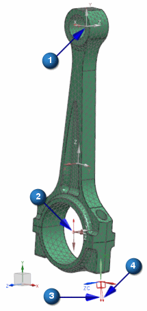
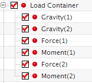

导入运动载荷
 仿真导航器
仿真导航器
 assy2_assy_engine_sim1.sim
assy2_assy_engine_sim1.sim-
 设为工作部件
设为工作部件
-
assy2_assy_engine_sim1.sim
-
导入运动载荷
-
 浏览
浏览 -
assy_engine_sim.sim
这是包含载荷传递记录的运动仿真文件，它应该位于..\assy2_assy_engine 文件夹中。
-
确定
-
列表
Rod Solution_1

注释
选择列表中的 Rod Solution_1行。
-
确定
载荷出现在运动对象的位置(在这个练习里，即运动副位置)，单箭头表示力载荷，双箭头表示力矩载荷。
注释
如预期所料，这个模型中的力矩载荷非常小。
(1) 运动副 J001上的力；(2) 运动副 J001上的力；(3) 重力载荷(4) 加速度载荷
各个载荷都被导入到一个边界条件字段表格中，这些字段列在仿真导航器中。

载荷也出现在载荷容器中。

注释
如果多个连接发生在相同连杆的相同位置上(比如弹簧和阻尼器)，反作用力将被求和，以创建单个载荷。
-
Force(1)(载荷容器下方)
-
信息
注意到属性信息包含了您在运动仿真中标记的时间步。
名称: Force(1)
类型: 力 - 组件
求解器卡片名称: FORCE
标签: 3
图层: 1
应用到: 1 节点注意到描述包含了您在运动仿真中标记的时间步
描述: Time steps of interest:
Time index = 18 , Time = 0.18 seconds , Time step name = 0.180000 seconds
Solution = Solution_2 , Motion Link = Rod
Load imported from motion simulation: D:\parts\motion\load_transfer\assy2_assy_engine\motion_1.sim
Motion loads generated on: 2012/05/04 09:43:51
CSYS: 笛卡尔坐标系
局部: 笛卡尔坐标系 - csys
幅值: Solution_2_Rod-Loads_Field3_Force
Fx: (评估的值: 4008.9 lbf)
Fy: (评估的值: 8.1156e-006 lbf)
Fz: (评估的值: -127.423 lbf)
方法: 几何分布 -
 信息窗口
信息窗口
 保存(标准工具条)
保存(标准工具条)